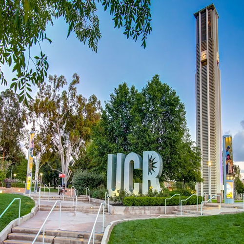
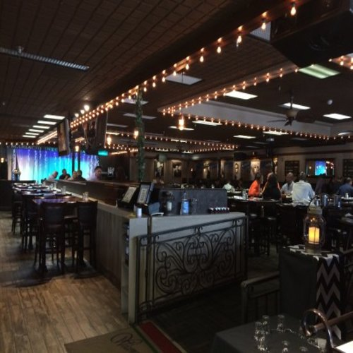
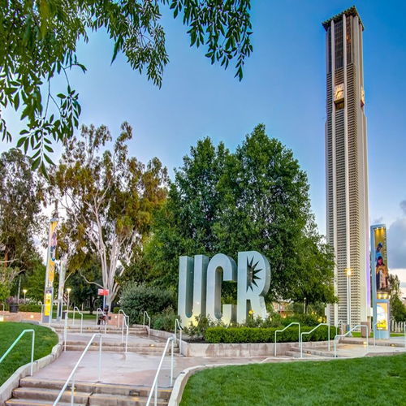
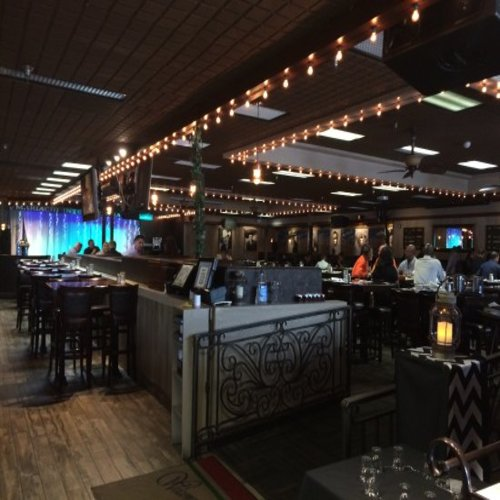

Madeleine Andablo
As I took on my first job at 17 years old, I prepared myself for an endless lesson on people and how they work, and my degree has done nothing but aid me in further understanding the world and how it works.
I've held multple postitions and titles over my years of experience in working different jobs and the only thing that has yet to change is my ability to be able to adapt to and work well with practically anyone.
I've also picked up various skills that not only help me through daily activities of life, but also give me ideas on how to do any job better. I've always hated confrontation with others so I have always done my best to work well
and patiently as well as prevent or diffuse any situations that may have been miscommunicated or mishandled. I help contribute to reaching goals and expecations to any project as well as provide creative ideas that can help improve productivity.
Althoug some of my areas of improvement invovlve procrastination and timelyness, but I have found that I work extremely well under pressure and I have yet to have a project or goal where the quality of it was affected or less than
what was expected due to my chaotic and at times unorganized scheduling. Nonetheless, in all jobs I've ever had whether retail, food, or technological industries, I have proven to be a hard worker, ingenious, and above all a valuable asset willing to learn
and teach others in order to do a job better.
I can adapt to any situation but I do ask a plethora of questions and will repeat them in ordder to make sure that what I'm doing is correct.
My experience in multiple fields has allowed me to find a common ground in all jobs and what is required from me in order to do all jobs well.
Although enthusiasm is often overlooked as a necessary quality in most jobs, I find that enthusiasm allows for a job or project to be done better in whatever
field that is being worked. My enthusiasm has allowed me to survive some of the worst customers I've come across as well as giving me the opportunity
to give my positive perspective on almost any negative situation.
Overall, I can provide ideas, enthusiasm, and hard work to any team I am made a part of, being that the team would like to work for me. I do not
tolerate disrespect towards me or others, therefore I will use my back bone and stand my ground whenever there is a situation I find innappropriate.
I make a great leader as I am always ready to take the first step forward to see what can come from the unknown. Although failure is part of the learning process,
I know i will always be ready to get back up and onto the next step in order to achieve success.
Amazon: Warehouse Associate- 1yr Multimedia Classroom Technololgies: Student Operator - 2yrs Pancho Villa's Mexican Grill & Entertainment: Server/Bartender - 1 year
Warehouse Associate
• Recieve and Sort packages via conveyor belt
• Work in groups to achieve stocking a full trailer within a specified time period
• Occassionally part of a committee dedicated to improving the work enviornment by making the effort to make it a more exciting place to work
Student Operator
• Responsible for answering phone calls directed to the multimedia staff in regards to an issue with clasrrom technology such a projectors or computers.
• Assist lead techs in installing new classroom technology equipment as projects.
• Visit classrooms requiring immediate assistance and repair any equiment needing attention.
Server
• Greet guests in a friendly and welcoming manner while taking their orders and being knowledgable on the menu
• Communicate to the kitchen and food runners of any food restrictions or allergies that a guest may have.
• Remember my tables, guests, and what they ordered in order to guarantee satisfaction and a potential return.
• Maintain cleanliness of my designated areas as well as friendliness throughout the entirety of the shift
Education
UC Riverside
Portfolio



 